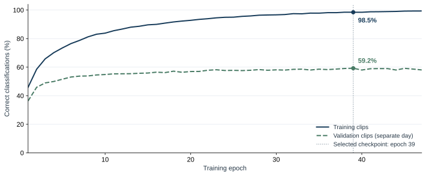
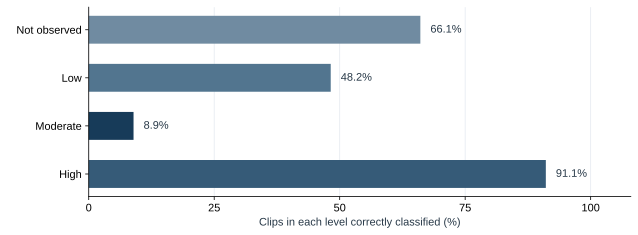
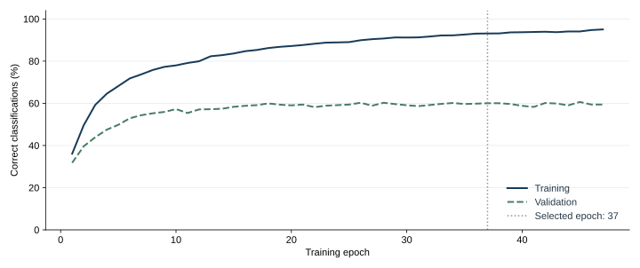
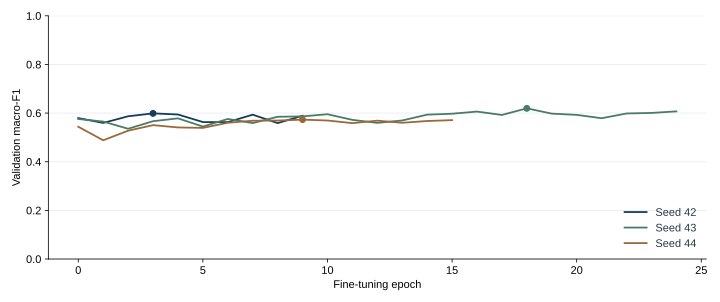

Demonstration
Choose a video to see feeding activity classifications and fish annotations. These examples have already been analyzed.
Video and classification
. Each segment covers 2 seconds. Select a segment to view its result.
Video overview
Summary of all analyzed windows.
Predominant estimated activity
—
Time at each level
Percentages of classified time, not probabilities of a correct prediction.
Start, middle and end
Compare feed quantities
Enter your usual feed quantity and a quantity to compare over the same period. The calculation shows the difference in quantity and cost. You choose both quantities.
The model does not determine the appropriate feed quantity. The cost difference is a simulation.
Result details
Activity in this window
Start the video to see the classification for each window.
Count in the frame
Count in the current frame. It does not represent the total number of fish in the tank.
Average count per frame
—
The overview adds up the time classified at each level. A video-wide predominant level requires at least 80% of the duration to be classified. To compare the start, middle and end, the video is divided into three equal parts. Each part needs at least 4 seconds, two results and 80% classified time. A level predominates only if it occupies more than half of the classified time. These rules determine whether the comparison can be displayed; they have not been validated as feeding-management indicators.
Pre-analyzed example
Reading the results
The model classifies feeding activity into four levels. Classification is an estimate from the images; it does not measure fish hunger or the amount of feed needed.
- Not observed
- No signs of feeding activity recognized by the model.
- Low
- Low estimated feeding activity in this window.
- Moderate
- Estimated feeding activity at an intermediate level.
- High
- Estimated feeding activity at a high level.
Classification every 2 seconds
A result appears at the end of each 2-second window, so the displayed level can change during playback. Any remaining segment shorter than 2 seconds at the end of the video is left unclassified.
Fish annotations
Rectangles show where the detector found fish. Lines show their movement, and numbers help track them while they remain visible. A fish may receive a different number when it reappears. These annotations do not confirm that it is eating.
Research reference
Feed is one of the main costs in fish farming. NOAA describes using cameras to monitor consumption and avoid overfeeding. This problem motivated FeedWatch.
To train the model, I used part of AV-FFIA, by Meng Cui and colleagues. The dataset contains videos labeled by feeding intensity with guidance from a technician. The U-FFIA study uses these data to investigate feeding activity recognition.
Models and processing
Every 2 seconds, a pretrained MobileNetV3 Small extracts features from 16 frames. Its weights remain fixed. The GRU trained in this project receives those features and classifies feeding activity. Two Fishial detectors locate fish, and a tracker follows their movement. Fish detection and feeding classification are separate analyses.
In the technical files, the levels not observed, low, moderate and high also appear under the Portuguese labels ausente, fraca, média and forte, respectively.
Evaluation results
The model correctly classified approximately 61 out of every 100 clips in the historical test. In an additional evaluation using videos from three other days, it correctly classified about 54 out of every 100. These are different samples; these percentages do not indicate the accuracy of each demonstration video.
Accuracy was lowest for the moderate category. Evaluation with other cameras, species and environments is still needed. The completed tests cannot determine feed quantities, demonstrate savings or estimate a tank's fish population.
Evaluation data and metrics
The historical evaluation uses 7,104 clips split by recording day: 3,898 for training, 1,705 for validation and 1,501 for testing. Test clips were recorded on June 22, 2022.
| Classification accuracy | Macro-F1 | Moderate-category recall |
|---|---|---|
| 60.56% | 0.5903 | 18.31% |
Accuracy is the percentage of correct classifications. Macro-F1 measures performance with equal weight for the four categories; values closer to 1 are better. The last column shows the percentage of moderate-category clips recognized correctly, called recall in the reports.
| Model | Classification accuracy | Macro-F1 | Moderate-category recall |
|---|---|---|---|
| Operational GRU | 53.57% | 0.4914 | 8.93% |
| Retrained GRU | 52.68% | 0.4923 | 10.71% |
| Random Forest | 52.23% | 0.5137 | 28.57% |
I also tested retraining with greater weight for the moderate category. It did not meet the criteria for replacing the operational model. The 224 clips were selected before running the models, and evaluation used the dataset's published labels. Because the clips come from the same recording context and may resemble one another, this result does not establish performance on other farms.
Model training
I trained a GRU network to classify feeding activity using 3,898 clips from two AV-FFIA recording days. I used another 1,705 clips from a third day to monitor performance during training and select the model version.
The fish boxes are generated by two pretrained Fishial detectors, separate from the GRU. The aquarium and koi videos on this page were not used to train the GRU.
Accuracy during training

Recall by category

Tests with other configurations
I tested three configurations with stronger regularization to reduce memorization of the training videos. Each configuration was trained three times with different initializations, for nine training runs in total. Comparison used training and validation data.
| Configuration | Accuracy | Macro-F1 |
|---|---|---|
| Baseline GRU | 58.5% | 0.5664 |
| Smaller GRU with regularization | 59.1% | 0.5669 |
| GRU with stronger regularization | 58.4% | 0.5663 |
| Smaller GRU with stronger regularization | 59.2% | 0.5645 |
No configuration met the criteria for replacing the operational model. The days reserved for the next test remain separate and were not used in this selection.
The next tests should include more recording conditions and a review of moderate-category errors. The overview makes a whole video easier to interpret, but does not improve model accuracy.
Additional training with more recording days
Training with more recording days
I expanded training to 4,374 clips from 6 days and validation to 1,865 clips from 2 AV-FFIA days. The GRU retained the same architecture, with balanced sampling across day, session and category. The MobileNetV3 Small feature extractor remained frozen.
The new training run did not meet the validation improvement criteria. The previous model remains in use, and the reserved test day was not opened.
Accuracy during the new training run

Comparison between training runs
Both models were evaluated on the same validation videos, with three initializations each. The table gives equal weight to each recording day and each initialization.
| Model | Mean accuracy | Mean Macro-F1 | Moderate-category recall |
|---|---|---|---|
| Previous model | 60.6% | 0.5913 | 25.9% |
| New training run | 61.5% | 0.6068 | 35.4% |
These videos come from the same research site. The result does not measure performance on other farms or feed savings.
Fine-tuning the image encoder
MobileNet fine-tuning
I fine-tuned the last MobileNet layers together with the GRU, using the same videos with small changes in lighting, color and crop. The comparison was repeated with three initializations.
The fine-tuned model did not meet every replacement criterion. The previous model remains in use.
| Measure | Previous model | After fine-tuning |
|---|---|---|
| Macro-F1 | 0.5664 | 0.5972 |
| Not observed | 72.1% | 61.1% |
| Low | 55.3% | 71.2% |
| Moderate | 17.6% | 28.0% |
| High | 88.2% | 78.1% |
Macro-F1 combines performance across the four categories. It ranges from zero to one; higher is better. Percentages show how many examples of each category were recognized correctly.

Analyze your own video
This page plays previously analyzed examples. To upload another video, install FeedWatch on your computer. The application accepts recordings from 2 to 60 seconds, up to 100 MB. The instructions cover installing Python and the required models.
Sources and credits
Training data: AV-FFIA, by Meng Cui and colleagues, under CC BY 4.0. Aquarium and koi videos: Richard Muller and lam loi on Pexels. Fish detector: Fishial. The source authors are not affiliated with FeedWatch and do not endorse the project.